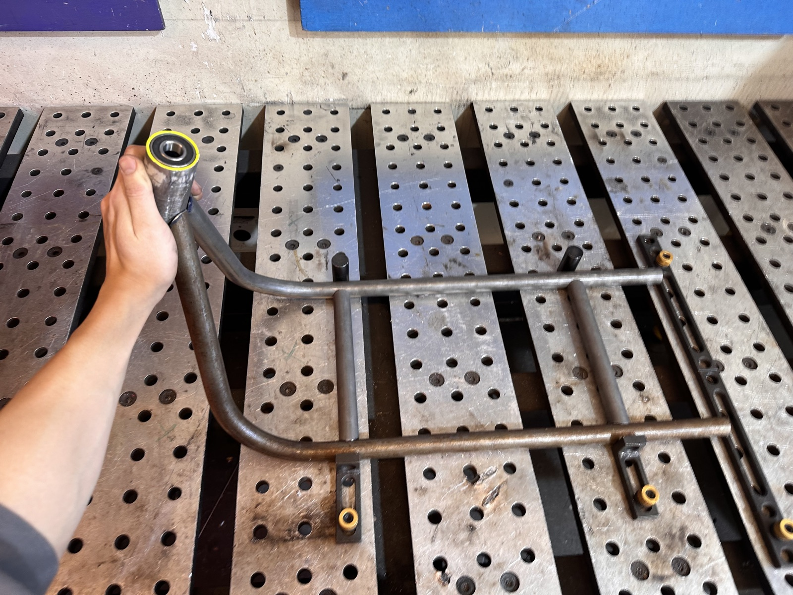
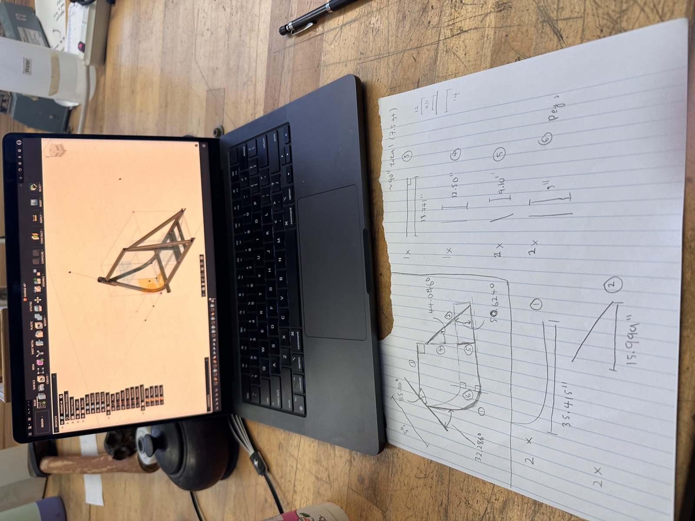
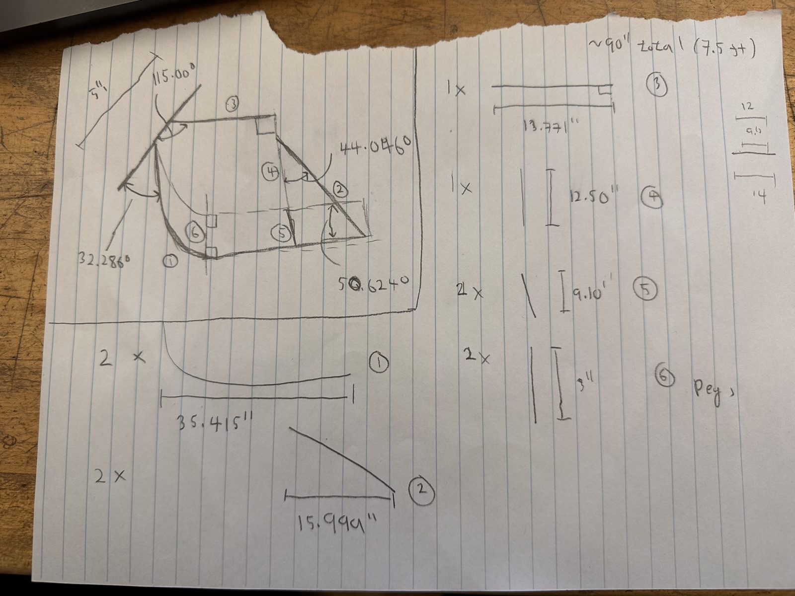
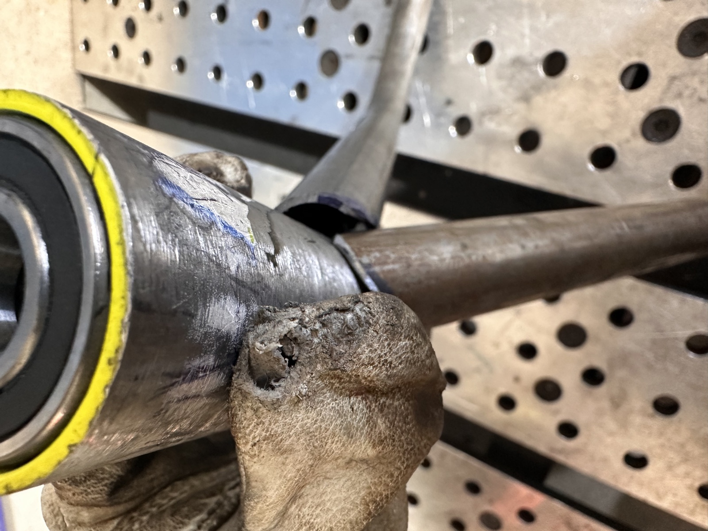
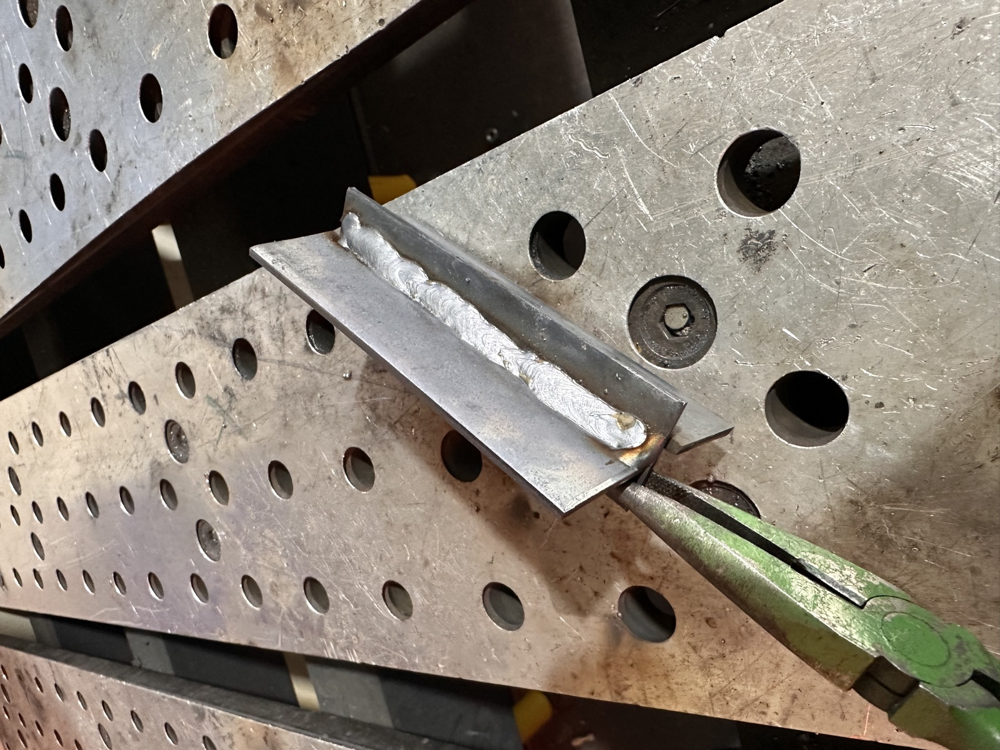

Mini Electric Motorcycle (Work in Progress)
Spring 2026 · With Jesse George-Akpenyi · Work in progress

The frame's head-tube bearing joint, on the welding fixture table.
Summary: Designing and building a small, rideable electric motorcycle with Jesse George-Akpenyi, targeting one rider, about 25 mph and 15 miles of range. We sized the battery and motor, modeled the steel-tube frame in CAD with an FEA check on a seated-bump load case, worked out the cut list by hand, and started welding the frame. The semester ran out before the drivetrain and bodywork, so this one is a permanent work in progress — I got through designing the frame and welding it together, and stopped there.
Skills
- Frame design: steel tube geometry, CAD modeling, FEA under a seated-bump load
- Battery and motor sizing for a target speed and range
- MIG welding and fabrication
- Working from hand-calculated cut lists to physical parts
The story so far
Goal and specs. The goal was a safe, rideable pocket bike for one rider (about 135 lb), targeting roughly 25 mph and 15 miles per charge, built around a steel tube frame carrying a motor, battery, controller and chain drive.
Battery and motor. We sized a 62.7 V, 13.6 Ah battery pack and a 72 V BLDC motor rated for 1500–1800 W continuous (about 3000 W peak), bought with a Maker Grant and already including a controller, throttle and the first sprocket and chain.
Frame design. I modeled the frame in CAD from scratch, working out where the battery, motor and controller would sit inside the tube triangle, and ran an FEA check on a seated-bump load case before committing to dimensions. Working from measured parameters (tube diameter, wheelbase, seat height, fork length and more), I translated the CAD geometry into a hand-written cut list of tube lengths and angles.


The CAD frame model next to the hand-calculated cut list of tube lengths and angles.
Cutting and welding. With the cut list set, I cut and welded the tubes on a fixture table, including the head-tube bearing joint at the front of the frame.

The head-tube bearing joint on the fixture table (left), and a close-up of the weld (right).

Welding one of the frame's bracket joints.
A short clip of grinding a weld clean:
And a longer shop session cutting, fitting and welding tubes:
Where it stands. The semester got busy before I could mount the drivetrain, wire the electronics, or finish the bodywork, so the frame is as far as this one got. I'm leaving it here as a permanent work in progress rather than a finished project — it's still real design and fabrication work, just not a rideable bike yet.